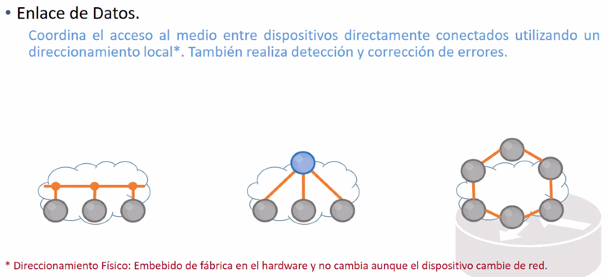

Se encarga de la topologia de redes. Es la capa que se encarga de deteccion y correcion de errores (sobre sequencias de bits).
Se encarga de la velocidad.
Se encarga de la direccion fisica (MAC Address).